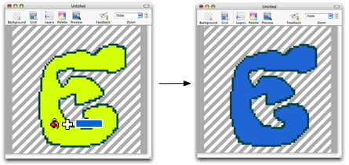

Using the fill tool
The fill tool performs traditional flood fills. When you click somewhere in the canvas, the color of the pixel at your cursor's position is designated as the seed. All pixels of that color that are directly connected (top, bottom, left, right—diagonals don't count) will be changed to the active color for the mouse button you just used. An example:
